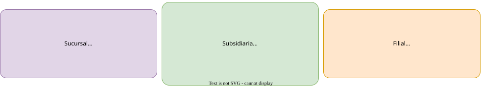

“Divide y vencerás.”
Julio C�sar (100 a.C.- 44 a.C.)
Todo lo grande comienza siendo algo pequeño. Apple, una empresa que hasta en el rinc�n m�s pequeño de este mundo hace sonar su nombre, comenz� siendo un hobbie de dos amigos en un garaje.
As�, cabe preguntarse por las diferentes estrategias que existen para ampliar el eco de una empresa en el �mbito nacional o internacional y cu�l es m�s conveniente para cada tipo de negocio.
Definici�n de sucursal
Una sucursal es una entidad secundaria que deriva de casa matriz, es decir, de su sede principal. A trav�s de ella se desarrollan, de forma total o parcial, las actividades de la sociedad.
Sucursal proviene del lat�n sucurrus (socorro en espa�ol). Esto es, porque las sucursales son peque�as entidades que buscan satisfacer la misma funci�n que la sede pero en lugares distintos, para que sus clientes tengan a mano el servicio en caso de “socorro”. Estos establecimientos tambi�n suelen estar m�s adaptados al lugar donde se encuentran, para ofrecer algo m�s personalizado. Por ejemplo, McDonald’s, aparte de tener un men� m�s o menos estable, hace ligeras variaciones en los entrantes en funci�n del pa�s en el que se en cuentre la franquicia.
Caracter�sticas
- Est� dotada de representaci�n permanente, es decir, su acci�n es continua y no intermitente, tiene empleados que todos los d�as trabajan all�, etc.
- Puede estar en el mismo pa�s que la sede o en uno distinto
- Tiene la misma raz�n social, es decir, el mismo nombre para todos los tr�mites legales
Diferencias entre sucursal, empresa subsidiaria y filial
Personalidad jur�dica
La sucursal no tiene personalidad jur�dica propia, lo que significa que no tiene la capacidad para adquirir derechos o asumir obligaciones. Cuentan con un control notable de la empresa de la que nacen. �sta �ltima entidad es la que tiene dichos derechos y obligaciones, no la sucursal en s�.
La filial o la subsidiaria s� tienen personalidad jur�dica propia. La casa matriz toma las decisiones importantes, pero tienen autonom�a para las decisiones del d�a a d�a. Son reconocidas como un sujeto independiente, que goza de derechos como presentar contratos (de alquiler,venta…) y una serie de obligaciones como el cumplimiento tributario.
Regulaci�n
Las sucursales est�n sujetas a la normativa del pa�s de su empresa matriz, independientemente del lugar donde est� la sucursal. En España actualmente las sucursales est�n regidas por el Real Decreto 1784/1996. En cambio, las otras dos s� que est�n sujetas a la regulaci�n del pa�s en el que se encuentren instaladas.
Grado de independencia
Cada sucursal est� encabezada por un encargado que ha sido asignado por la empresa “madre”. Este posee un poder notarial, es decir, puede actuar en nombre de la casa matriz en el lugar en el que se encuentre el establecimiento. El grado de independencia de la sucursal puede ser mayor si el representante es confiable y se necesita que sea aut�noma (poder notarial general), o puede ser menor si la sucursal quiere mantener la uniformidad de la empresa (poder notarial limitado).
Un poco m�s independientes son las empresas subsidiarias, porque aunque sus metas est�n designadas por la sede y muchas operaciones requieran de su afirmaci�n, no dejan de tener una personalidad jur�dica distinta.
Por otro lado, las filiales son mucho m�s independientes, pues como hemos dicho antes es una empresa distinta, pero estrechamente relacionadas con la casa matriz. Esto significa que aunque tenga mayor libertad, sus objetivos suelen estar alineados con los de dicha corporaci�n y algunas pocas decisiones vitales necesitan de su aprobaci�n. De hecho, puede que las filiales no tengan una sociedad dominante entre todas las que poseen sus participaciones. Las riendas de la empresa son tomadas por todos los accionistas en conjunto.
Forma de acceder a ellas
Las sucursales est�n solo a mano de la empresa matriz de la que nacen.
Para acceder a las filiales como nuevo socio, debes hablar con los actuales socios y acordar la compra de un porcentaje de participaciones sociales, por ejemplo del 30%. En funci�n de la cantidad de acciones que compres, tendr�s m�s o menos relevancia en la toma de decisiones importantes.
En cambio, para apostar por una subsidiaria, si buscas tener relevancia debes poseer m�s del 50% de las acciones. Sin embargo, estas tienen como ventaja, como hemos dicho previamente, que estar�n mucho m�s controladas por el inversor, a precio de tener que comprar un mayor porcentaje de participaciones.

Ejemplos de sucursales
Caixabank
Si vives en España, probablemente hayas o�do o seas cliente de Caixabank. Este banco, con sede en Barcelona, cuenta con numerosas oficinas repartidas por toda Espa�a, que se encargan de atender a clientes al igual que har�a la sede, por ejemplo, aprobando pr�stamos. Tambi�n cuenta con cajeros autom�ticos donde puedes retirar fondos en efectivo.

IKEA
Ikea es una empresa con sede en Delf (Países Bajos), pero es una empresa que todos en algún momento de nuestras vidas hemos tenido que visitar. IKEA tiene sucursales en algunos países, pero también cuenta con sucursales que le ayudan a mantener la misma personalidad jurídica mientras ofrece un servicio similar al de su país de origen

Nike
Esta famosa marca de ropa deportiva tiene tiendas con su mismo nombre repartidas por todo el mundo. Ser�a un poco raro que todas estas tiendas fuesen independientes entre sí, ¿no crees?. Pues así es, la mayoría de tiendas de nike son sucursales donde se venden en lugares muy distintos los mismo productos de la marca estadounidense. Aunque es cierto, que Nike también ofrece en sus sucursales productos en función de las preferencias locales.

Ventajas e inconvenientes
Ventajas
-
La casa matriz se encarga de la mayor�a de las responsabilidades, desde la gestión de las multas y el pago de los empleados, por lo que la sucursal se puede centrar más en llevar a cabo los problemas de los clientes y no perder el tiempo en algunos trámites tediosos.
-
No hay un m�nimo de capital social, como sí sucede con los otros modelos vistos previamente.
-
Para la sociedad madre, se tiene que es una de las opciones más optimas si se busca mantener firme el propósito de la empresa y una supervisión y una capacidad de dominar altas. Es decir, la sucursal en sí tendrá menos flexibilidad para ser independiente en sí misma; su futuro viene determinado por su empresa predecesora.
-
Permite ampliar la reputaci�n de una marca y descubrir nuevas necesidades de clientes que viven en otros lugares. Y por supuesto, traer� nuevos ingresos a la entidad inversora, siempre que el establecimiento funcione con normalidad.
-
Ayuda a centrarse en el marketing y la publicidad del negocio mientras otro empleados desarrollan el servicio. Puede verse este caso como una “delegación masiva”, que ayudaría a la larga a propensar un mayor crecimiento en base al estudio de datos, predicciones, etc.
Inconvenientes
-
Fuerte inversión inicial.
-
Riesgo del plan.Como todas las inversiones presenta un riesgo; puede ser que no retorne beneficios suficientes para que sea rentable.
-
Necesita una alta coordinación y una comunicación constante con la sede para favorecer el buen funcionamiento de esta.
Proceso para abrir una sucursal en España
-
Es obligatorio abrir una cuenta de banco española a nombre de la sucursal
-
Formalizar los cambios en un documento p�blico ante el notario, con aspectos como el nombre de la sucursal, sus empleados organizados según su poder, su domicilio social (lugar de su sede, donde llegan las notificaciones,etc), entre otros. Tambi�n suelen aportarse los estatutos sociales, que marcan las normas y las políticas de la nueva empresa, escrito por un abogado y documentos que certifiquen la existencia de una �nica casa matriz.
-
Registrarse en el registro mercantil. El registro mercantil es una institución única que ayuda a que haya una mayor transparencia entre una empresa y un cliente, proveedor, inversor inicial o potencial. Es decir, es un documento público que todos pueden visitar y en el que las empresas españolas están obligadas a publicar cierta información, como los cambios en su capital o un cambio del domicilio social.
-
Solicitar a la Agencia Tributaria el NIF (número de idenfificación fiscal), requisito para que cualquier persona jur�dica realize trámites tributarios. Presentar el modelo 036, un documento que necesita Hacienda para saber aquellas personas que están en condición de empresarios o autónomos.
Reflexión final: En qué casos la sucursal es buen aliado
Si la empresa necesita un constante traspaso entre ella y la matriz, la sucursal destaca pues cuenta con la misma estructura de capital, es decir, la financiación sucede de la misma manera en ambas sociedades. Es un modelo de expansión que quizás interese si se busca mantener homogeneidad a los propósitos de la sucursal respecto de la matriz y una estructura más simple, pues no son entidades independientes.
Referencias
https://www.chusmeando.com/preguntas-y-respuestas/que-es-una-casa-matriz-y-por-que-es-el-corazon-de-las-empresas-globales/ https://www.youtube.com/watch?v=buZ7R9LQ-rU